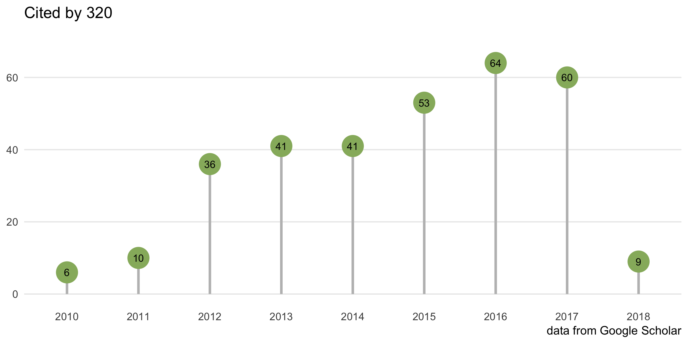

Featured Articles
Let us know if you have published using GOSemSim and your publication will be featured here.

Disease or Drug analysis
- Regulatory T Cells Orchestrate Similar Immune Evasion of Fetuses and Tumors in Mice. The Journal of Immunology. 2016, 196(2):678-690.
- DOSE: an R/Bioconductor package for disease ontology semantic and enrichment analysis. Bioinformatics. 2015, 31(4):608-609.
- TFmiR: a web server for constructing and analyzing disease-specific transcription factor and miRNA co-regulatory networks. Nucleic Acids Research. 2015, 43(W1):W283-W288.
- Human Monogenic Disease Genes Have Frequently Functionally Redundant Paralogs. PLoS Computational Biology. 2013, 9(5):e1003073.
- Flexible model-based clustering of mixed binary and continuous data: application to genetic regulation and cancer. Nucleic Acids Research. 2017
Gene/Protein functional analysis
- Network-driven plasma proteomics expose molecular changes in the Alzheimer’s brain. Molecular Neurodegeneration. 2016, 11:31.
- Single-Cell Co-expression Analysis Reveals Distinct Functional Modules, Co-regulation Mechanisms and Clinical Outcomes. PLOS Computational Biology. 2016, 12(4):e1004892.
- Crosstalk of dynamic functional modules in lung development of rhesus macaques. Mol. Biosyst.. 2016, 12:1342-1349.
- Comparative transcriptomics reveals the conserved building blocks involved in parallel evolution of diverse phenotypic traits in ants. Genome Biology. 2016, 17:43.
- protr/ProtrWeb: R package and web server for generating various numerical representation schemes of protein sequences. Bioinformatics. 2015, 31(11):1857-1859.
- tRanslatome: an R/Bioconductor package to portray translational control. Bioinformatics. 2014, 30(2):289-291.
- EvoCor: a platform for predicting functionally related genes using phylogenetic and expression profiles. Nucleic Acids Research. 2014, 42(W1):W72-W75.
- Genome-wide activity of unliganded estrogen receptor-α in breast cancer cells. Proc Natl Acad Sci. 2014, 111(13):4892-4897.
- Constitutively Elevated Salicylic Acid Levels Alter Photosynthesis and Oxidative State but Not Growth in Transgenic Populus. The Plant Cell. 2013, 25(7):2714-2730.
Expression data processing
- Robust Detection of Outlier Samples and Genes in Expression Datasets. Journal of Proteomics & Bioinformatics. 2016, 9:38-48.
- Missing value imputation for microRNA expression data by using a GO-based similarity measure. BMC Bioinformatics. 2016, 17:10.
Interactions
Genetic interaction
- Inferring modulators of genetic interactions with epistatic nested effects models. PLoS Comput Biol.. 2017, 13(4):e1005496
Protein-Protein Interaction
- Critical assessment and performance improvement of plant–pathogen protein–protein interaction prediction methods. *** Briefings in Bioinformatics***. 2017.
- Analyzing and interpreting genome data at the network level with ConsensusPathDB. Nature Protocols. 2016, 11:1889-1907.
- Integration of multiple biological features yields high confidence human protein interactome. Journal of Theoretical Biology. 2016, 403:85-96.
- Computational prediction of virus–human protein–protein interactions using embedding kernelized heterogeneous data. Mol. BioSyst. 2016, 12:1976-1986.
- Computational probing protein–protein interactions targeting small molecules. Bioinformatics. 2016, 32(2):226-234.
- An integrative C. elegans protein–protein interaction network with reliability assessment based on a probabilistic graphical model. Mol. Biosyst. 2016, 12:85-92.
- A Highly Efficient Approach to Protein Interactome Mapping Based on Collaborative Filtering Framework. Scientific Reports. 5:7702.
- Deciphering Signaling Pathway Networks to Understand the Molecular Mechanisms of Metformin Action. PLoS Comput Biol. 2015, 11(6):e1004202.
- A novel link prediction algorithm for reconstructing protein–protein interaction networks by topological similarity. Bioinformatics. 2013, 29(3):355-364.
- Minimum curvilinearity to enhance topological prediction of protein interactions by network embedding. Bioinformatics. 2013, 29(13):i199-i209.
- IntScore: a web tool for confidence scoring of biological interactions. Nucl. Acids Res.. 2012, 40(W1):W140-W146.
miRNA-mRNA Interaction
miR-17∼92 family clusters control iNKT cell ontogenesis via modulation of TGF-β signaling. PNAS. 2016.
- Identifying Functional cancer-specific miRNA-mRNA interactions in testicular germ cell tumor. Journal of Theoretical Biology. 2016, 404:82-96.
- miR2GO: comparative functional analysis for microRNAs. Bioinformatics. 2015, 31(14):2403-2405.
- Uncovering MicroRNA and Transcription Factor Mediated Regulatory Networks in Glioblastoma. PLoS Comput Biol. 2012, 8(7):e1002488.
- myMIR: a genome-wide microRNA targets identification and annotation tool. Briefings in Bioinformatics. 2011, 12(6):588-600.
Functional similarity analysis of human virus-encoded miRNAs. Journal of Clinical Bioinformatics. 2011, 1:15.
Cellular localization
Motif analysis
- Comparative pan-cancer DNA methylation analysis reveals cancer common and specific patterns. Brief Bioinform, 2016
non-coding RNA
- Global and cell-type specific properties of lincRNAs with ribosome occupancy. ** Nucl. Acids Res**. 2016.
- Advantages of mixing bioinformatics and visualization approaches for analyzing sRNA-mediated regulatory bacterial networks. Briefings In Bioinformatics. 2015, 16(5):795-805.
Semantic Similarity analysis
- A-DaGO-Fun: an adaptable Gene Ontology semantic similarity-based functional analysis tool. Bioinformatics. 2016, 32(3):477-479.
- The semantic measures library and toolkit: fast computation of semantic similarity and relatedness using biomedical ontologies. Bioinformatics. 2014, 30(5):740-742.
- Semantic similarity analysis of protein data: assessment with biological features and issues. Briefings in Bioinformatics. 2012, 13(5):569-585.
Reducing GO term redundancy
- Faulty neuronal determination and cell polarization are reverted by modulating HD early phenotypes PNAS. 2017.
- EGFR feedback-inhibition by Ran-binding protein 6 is disrupted in cancer Nature Communications. 2017, 8(1):2035.
- Intracerebroventricular delivery of hematopoietic progenitors results in rapid and robust engraftment of microglia-like cells. Science Advances. 2017, 3(12):e1701211.
Evolution
- Venus flytrap carnivorous lifestyle builds on herbivore defense strategies. Cold Spring Harbor Laboratory Press. 2016, 26:812-825.
- FunTree: advances in a resource for exploring and contextualising protein function evolution, Nucl. Acids Res.. 2016, 44(D1):D317-D323.
- Evolutionary rate covariation reveals shared functionality and coexpression of genes. Genome Research. 2012, 22:714-720.